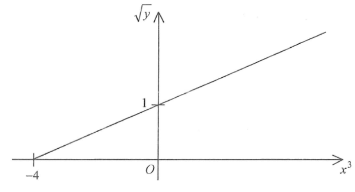

Q The Question
[2020 MC #34]
The graph in the figure shows the linear relation between \(x^{3}\) and \(\sqrt{y}\). If \(x=2\), then \(y=\)
- A. \(3\)
- B. \(8\)
- C. \(9\)
- D. \(33\)
The graph is a straight line with horizontal intercept \(-4\) (on the \(x^3\)-axis) and vertical intercept \(1\) (on the \(\sqrt{y}\)-axis).
Original Figure

A Reading the Intercepts from the Graph
First we identify the two key points marked on the axes of the given linear graph:
- On the horizontal axis (labelled \(x^3\)): the line cuts at \(-4\).
- On the vertical axis (labelled \(\sqrt{y}\)): the line cuts at \(1\).
Read‑outs: horizontal intercept \(=-4\), vertical intercept \(=1\).
Read the two intercepts from the graph:
\[ \text{horizontal intercept}: \; x^3=-4, \qquad \sqrt{y}=0 \] \[ \text{vertical intercept}: \; x^3=0, \qquad \sqrt{y}=1 \]B Form the Equation of the Line
With the two intercepts we can find the slope and form the equation of the straight line.
Drag the slider: the moving point shows the corresponding \(\sqrt{y}\) value. At \(x^3=8\), \(\sqrt{y}=3\).
Compute the slope using the two intercepts \((-4,\,0)\) and \((0,\,1)\):
\[ m=\frac{1-0}{0-(-4)}=\frac{1}{4}=0.25 \]Using slope‑intercept form with vertical intercept \(1\):
\[ \sqrt{y}=\frac{1}{4}\,x^3+1 \]Equivalently, multiply by 4:
\[ 4\sqrt{y}=x^3+4 \]C Substitute \(x=2\) and Solve for \(y\)
Now substitute \(x=2\) into the linear relation and solve for \(y\).
Live read‑out: when \(x=2\), \(x^3=8\), \(\sqrt{y}=0.25(8)+1=3\), so \(y=3^2=9\).
Substitute \(x=2\) into the equation \(\sqrt{y}=\dfrac{1}{4}x^3+1\):
\[ \sqrt{y}=\frac{1}{4}(2)^3+1 \] \[ \sqrt{y}=\frac{1}{4}(8)+1=2+1=3 \]Square both sides to obtain \(y\):
\[ y = (\sqrt{y})^2 = 3^2 = 9 \]Summary of Answers
- A Horizontal intercept: \((-4,\,0)\) · Vertical intercept: \((0,\,1)\)
- B Slope \(m=\dfrac{1}{4}\) · Equation \(\sqrt{y}=\dfrac{1}{4}x^3+1\)
- C At \(x=2\): \(\sqrt{y}=3\) \(\Rightarrow\) \(\boxed{y=9}\)
Correct option: C. \(9\)